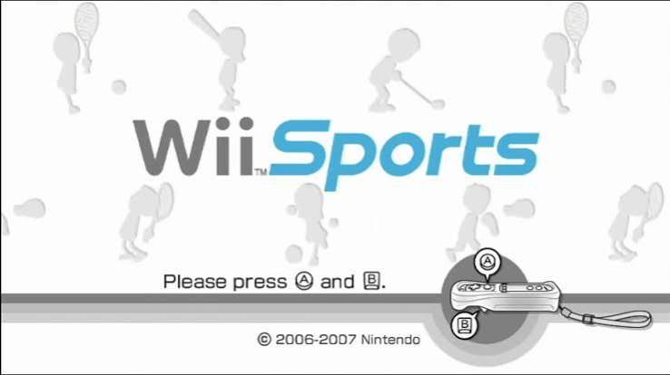
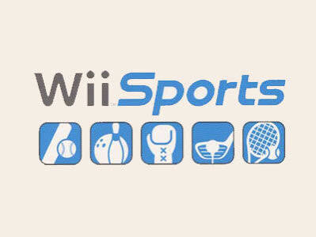

History of Wii Sports
1. Concept and the Motion-Control Revolution (2006)
When Nintendo began developing its next-generation console (codenamed "Revolution"), legendary designer Shigeru Miyamoto wanted a software title that anyone—regardless of gaming experience—could immediately pick up and play. Utilizing the innovative Wiimote's motion sensors, *Wii Sports* was designed as a pack-in game to demonstrate physical, intuitive control through tennis, baseball, bowling, golf, and boxing.

2. Global Launch and Becoming a Phenomenon (2006-2007)
Released alongside the Nintendo Wii in late 2006 (bundled in every box in most regions outside Japan), *Wii Sports* became an instant cultural sensation. It bridged generational gaps, bringing parents, grandparents, and casual players together in living rooms worldwide. Bowling nights and intense tennis rallies turned the game into a global household staple.

3. Legacy and All-Time Sales Crown (2009-Present)
Because it was bundled with the console, *Wii Sports* went on to sell over 82 million copies, making it one of the best-selling video games of all time. Its customizable avatar system, the "Miis," became iconic symbols of Nintendo's gaming identity, inspiring modern spiritual successors like *Nintendo Switch Sports*.
